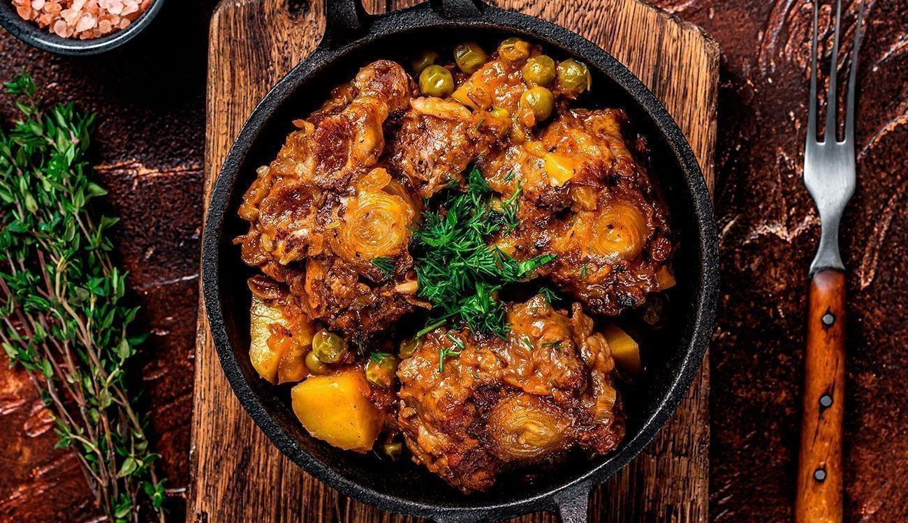

<DOCTYPE HTML>

    <html lang="en">

    <head>
        <meta charset="UTF-8">

        <meta name="viewport" content="width=device-width, initial-scale=1.0">
        <link rel="stylesheet" href="css/style.css">

        <title>Delicia Grossa</title>

    </head>

    <body>

        <style>
            @import url('https://fonts.googleapis.com/css2?family=Julius+Sans+One&display=swap');
        </style>

        <header>

            <section>

                <div>
                    <h1>Receita de Rabada | Uma delícia profunda</h1>
                </div>

            </section>

        </header>

        <section>

            <div>

                <div id="ingredientes">

                    <h2>Ingredientes</h2>

                </div>

                <ul id="menu">

                    <li>2 kg de rabada fresca</li>
                    <li>Cebola</li>
                    <li>Pimenta - do - reino a gosto</li>
                    <li>3 colheres de molho de tomate</li>
                    <li>Sal a gosto</li>
                    <li>alho</li>
                    <li>Cheiro verde</li>
                    <li>4 colheres de sopa azeite</li>

                </ul>

            </div>

        </section>

        <div>

            <div id="preparo">
                <h2>Modo de preparo</h2>
            </div>

            <ol id="menu">
                <li>Lave primeiramente a rabada com vinagre.</li>
                <li>Depois tempere com sal, pimenta - do - reino e cheiro verde.</li>
                <li>Numa panela de pressão de 7 litros, junte o azeite.</li>
                <li>Depois, acrescente a cebola picada e o alho.</li>
                <li>Quando estiver dourado, jogue a rabada e mexa para agregar o tempero.</li>
                <li>Adicione água até que cubra a rabada, tampe e deixe cozinhando, após pegar pressão por 30
                    minutos.
                </li>
                <li>Em seguida, quando a rabada estiver mole, despeje o molho de tomate, verifique o sal e a
                    pimenta.
                </li>
                <li>Deixe ferver mais um pouco e desligue.</li>
                <li>Deixe esfriar um pouco até que o óleo suba todo.</li>
                <li>Com uma concha retire todo o óleo que fica por cima, deixando o prato mais suave.</li>

            </ol>

        </div>

        <section>

            <div>

                

            </div>

        </section>

        <footer>

            <p><a href="rabada.html">Para mais informações sobre a rabada, clique AQUI!</a></p>

        </footer>

    </body>

    </html>